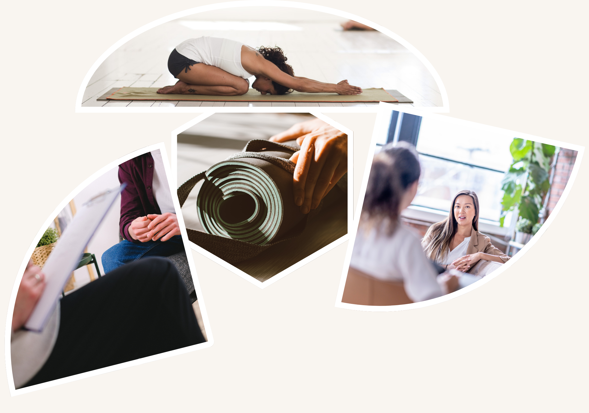

Pourquoi consulter un sophrologue ?
La sophrologie aide à mieux gérer le stress, les émotions et les tensions du quotidien. Elle permet de retrouver un équilibre entre le corps et l’esprit grâce à des techniques douces de respiration, de relaxation et de visualisation.
On peut consulter un sophrologue pour :
- Apaiser l’anxiété ou les troubles du sommeil
- Mieux vivre une période difficile (deuil, séparation, maladie…)
- Préparer un événement important (examen, accouchement, compétition)
- Renforcer la confiance en soi et la concentration
- Soulager certaines douleurs chroniques en complément d’un suivi médical
Accessible à tous, la sophrologie offre un espace pour se recentrer et se reconnecter à soi.
